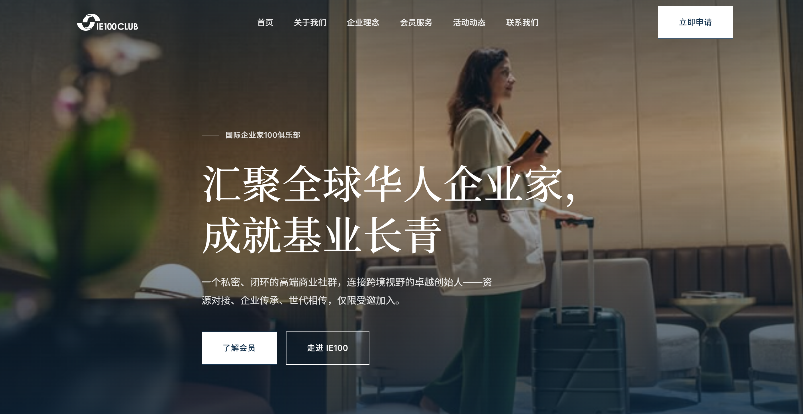
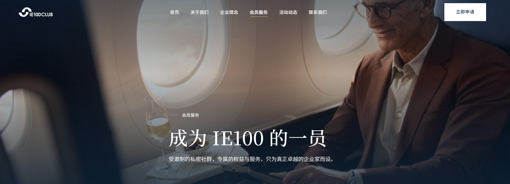
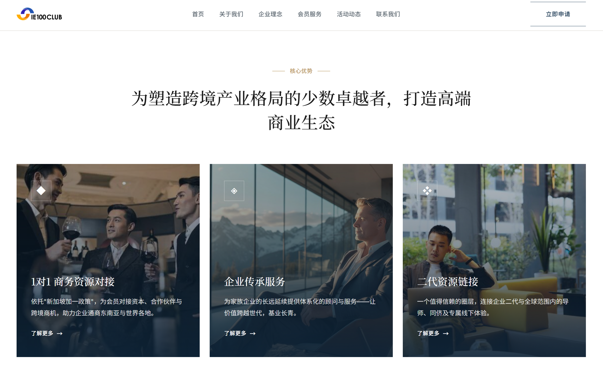
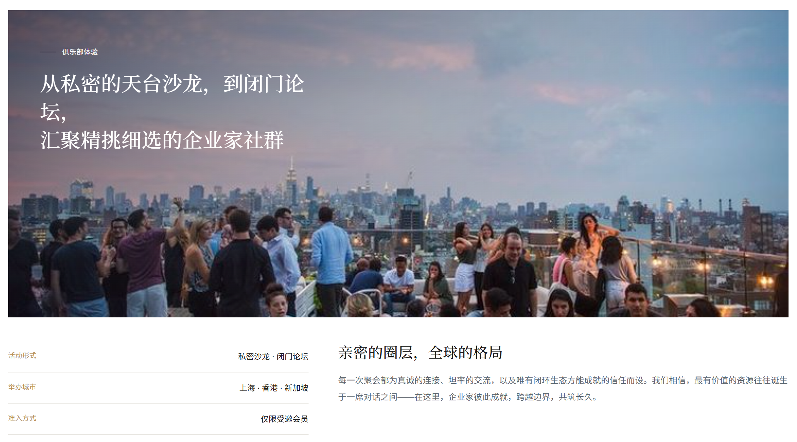
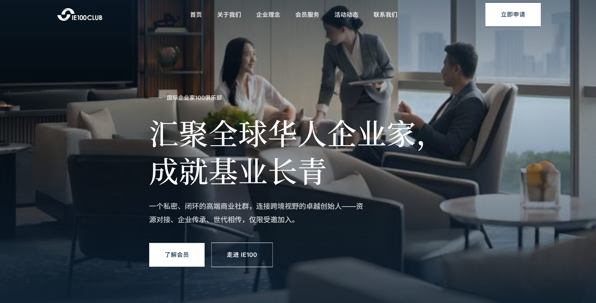
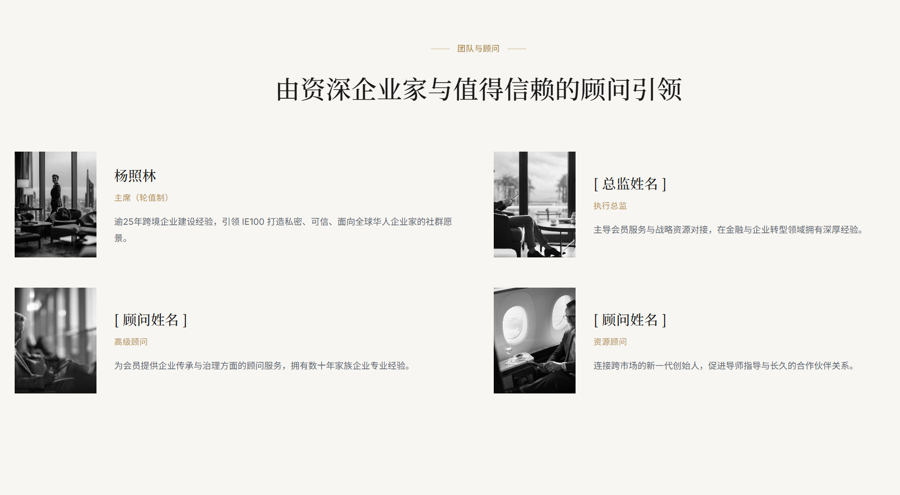
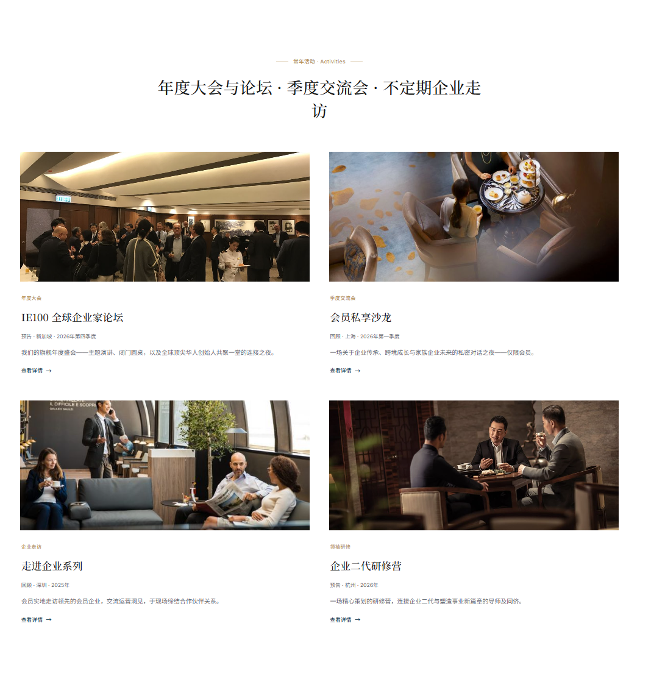
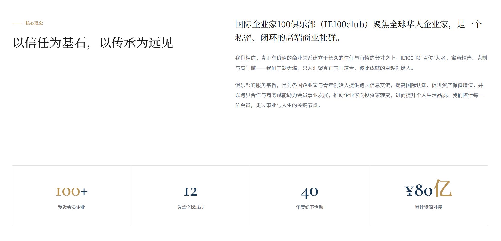

IE100 Club

01 Overview
IE100 is capped at 100 members globally. An invitation-only network of established founders and family business successors — operating across Singapore, Hong Kong, and Shanghai.
The brief: build a digital presence that signals belonging before a single word is read. This audience recognises immediately when something is built for them versus engineered for scale. Every decision had to carry weight.
The platform covers three functions: communicating the club's value to prospective members, serving as a credibility reference for partners and event organisers, and representing the network's cross-border reach.
- 1v1 Business Matching.
- Leveraging Singapore's cross-border policy framework to connect members with capital, partners, and opportunities across Southeast Asia and beyond.
- Enterprise Succession.
- Structured advisory for family business continuity — making multi-generational transitions strategic rather than reactive.
- Second-Generation Network.
- A closed-loop community connecting business heirs with global mentors, peers, and advisors across industries.




02 Design Approach
Dark photography. Large Chinese type. A gold accent used exactly once per section. The visual language borrows from private banking — not the startup world.
Prestige is communicated through restraint. Near-black backgrounds anchor the full-bleed photography and let the Chinese headline typography read with weight. Clean white sections for the service cards create visual breath — contrast that signals craft rather than compromise.
- Bilingual by architecture.
- All content authored in Simplified Chinese — not translated but written for the audience. The nav, CTAs, and body copy are all Chinese-first. The site doesn't translate; it speaks.
- Photography as positioning.
- Hotel lounges, boardrooms, rooftop gatherings. Each image was chosen to communicate the social texture of the club — warm but selective, global but closed.
- Gold accent, used sparingly.
- A single warm gold runs through section labels, service icons, and link text. It marks hierarchy without decorating everything.


03 Website
The site covers the full member journey — from first impression to application. Each section has a distinct visual register that reflects its function.
- Homepage.
- Two hero treatments — hotel lounge and boardroom — rotate to show the dual dimensions of the club: intimate and international. Opening statement loads before the hero loads.
- Services.
- Three service pillars (business matching, succession advisory, second-generation network) each get a card with dark photo overlay and a gold icon. Scannable in seconds.
- Events & Activities.
- Annual forum, quarterly salons, corporate site visits, and the second-generation programme. Presented as a structured catalog with entry criteria visible.
- Leadership.
- Founding team and advisory council — one of the most trust-critical pages on the site. Portrait-led grid that reads as institutional without being cold.
- Membership.
- Criteria and cost stated clearly. For this audience, transparency about selectivity is itself a trust signal.

04 Outcome
A digital presence that the club can stand behind at any table.
100+ member enterprises. 12 cities. ¥80亿 in matched investment. The site functions as the credibility anchor behind every partnership conversation, event outreach, and membership enquiry. Designed and shipped end-to-end as sole designer and developer.